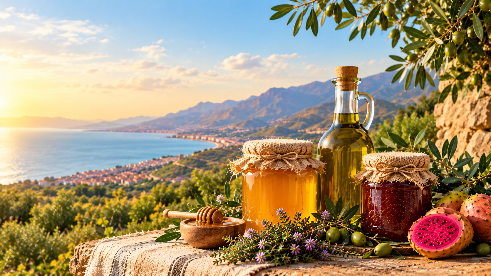
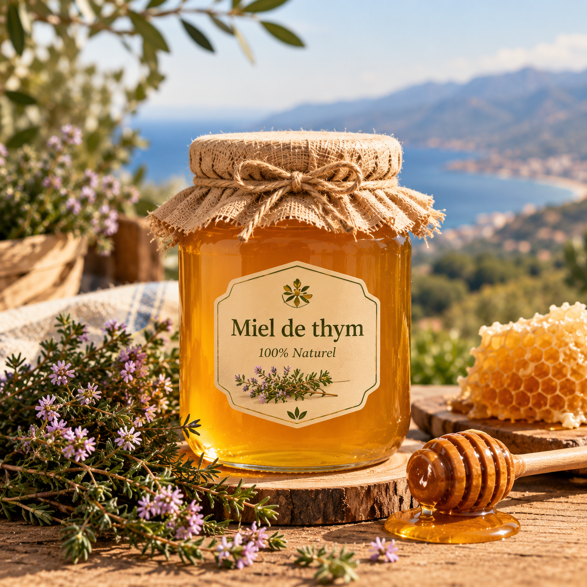
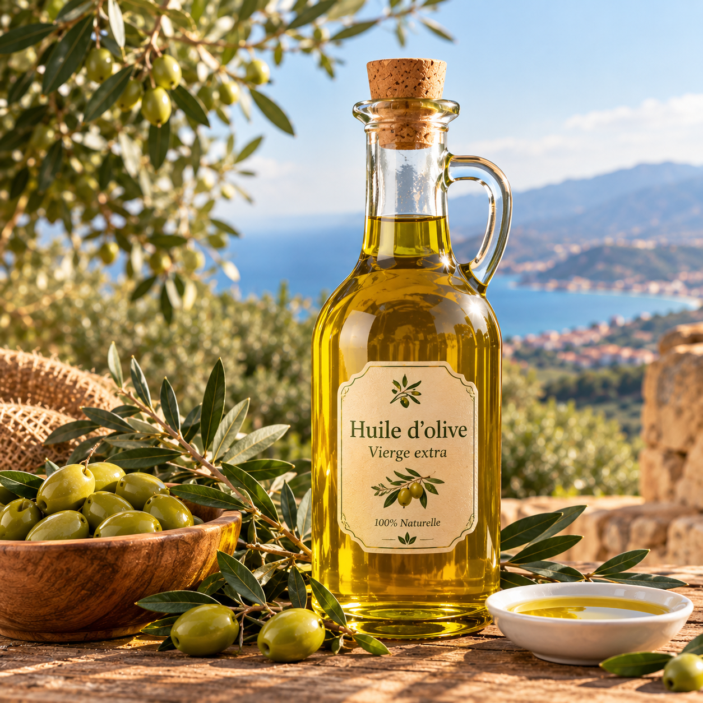

COOPÉRATIVE DE FEMMES · NADOR
Le goût du Rif, récolté à la main par 25 femmes
Miel de thym, huile d'olive et confiture de figue de barbarie : des produits naturels et authentiques, élaborés avec soin pour vous offrir le meilleur du terroir de Nador.

Notre coopérative
La coopérative Thimdrine rassemble 25 femmes de la région de Nador autour d’une même ambition : valoriser les produits du terroir marocain. Grâce à leur savoir-faire et à leur engagement, elles produisent du miel de thym, de l’huile d’olive et de la confiture de figue de barbarie de qualité, tout en contribuant au développement économique et social de leur communauté.
Lire l'histoire de la coopérative →Nos produits phares
Des produits naturels et authentiques, préparés avec soin pour vous offrir le meilleur du terroir de Nador.

Miel de thym
Un miel pur et parfumé, reflet du savoir-faire traditionnel de notre coopérative.
150 DH · pot de 500 g

Huile d'olive extra vierge
Issue des meilleures olives de la région, notre huile d’olive allie authenticité, qualité et saveurs naturelles.
30 DH · bouteille de 1 L

Confiture de figue de barbarie
Le goût authentique du terroir dans une huile d’olive de qualité exceptionnelle
35 DH · pot de 350 g
Envie de goûter au Rif ?
Envoyez-nous votre demande de commande : nous vous répondons sous 48 heures pour organiser la livraison ou le retrait à Nador.
Faire une demande de commande